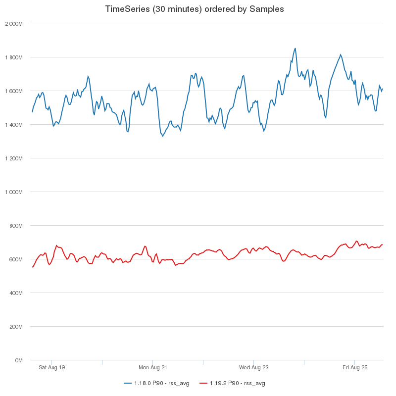

The State of Atom's Performance
January 10, 2018 maxbrunsfeld
Tweet
Our original goal in building Atom was to create the most hackable text editor that we could imagine. This overarching goal shaped Atom’s architecture and our team’s early priorities. Since Atom launched, its extensibility has been validated by numerous ambitious projects that have been built on top of it, like Facebook’s Nuclide, the Juno IDE for Julia, and the Learn.co IDE, as well as by the thousands of community packages and themes published to atom.io.
Atom has proven to be as extensible as we had hoped, and our focus over the last two years has shifted from building out an extensible system to achieving excellent performance. Now that 2017 has come to an end, we’re taking a moment to reflect on the performance improvements that we’ve made in the past year and the next improvements we’ll be tackling in 2018.
Startup Time
Atom takes longer to start up than text editors like Vim and Sublime Text because of the dynamic architecture of the app. The majority of our code is written in JavaScript as opposed to C or C++, which is important for Atom’s extensibility, but makes it more challenging to ensure that the app starts quickly.
2017’s Improvements
Startup Snapshots - In March, we started making use of a relatively new feature of the V8 JavaScript runtime called custom startup snapshots. This feature allows us to perform major parts of Atom’s initialization ahead of time on our build servers: not just source code compilation (as is done with C or C++) but even the construction of complex object graphs on the heap. Using startup snapshots required us to make major architectural changes. In order to avoid making DOM calls during initialization, we removed the use of jQuery and custom HTML elements from our entire codebase, and we built a tool called electron-link to transform our code into a script suitable for snapshotting. These investments paid off: we’ve already cut our initial startup time in half.
Next Steps
Expanding our Startup Snapshot - Since we made our initial investments in startup snapshots, the V8 team has made further improvements to the feature. It is now possible for us to include in the snapshot even more parts of our code, such as those that include bindings to native code.
Deferring Package Loading - Many packages can be loaded after the window has initially rendered without affecting the experience of using Atom. By doing this, we can mostly eliminate the impact of users’ installed packages on startup time.
Snapshotting Installed Packages - Some packages do need to be activated before we render anything. One weakness of our current startup snapshot is that it does not include the code of any community packages that you have installed. We may start including the snapshot-creation utilities as part of Atom so that we can automatically create snapshots of users’ customized Atom environments.
Native Launcher - Currently, opening an Atom window requires briefly starting up a new Electron process even if the Atom application is already running. We plan to rework our application startup process by introducing a dedicated native executable that checks for a running Atom application and boots one up if needed.
Typing Latency
Historically, Atom’s extensibility has required us to perform some expensive computation on every keystroke. Last year, we made several major changes to eliminate these costs without sacrificing hackability.
2017’s Improvements
Text Rendering Rewrite - Atom renders text using the DOM in order to allow for effortless theming and customization. In May, we rewrote Atom’s text rendering system from scratch, with the goal of making DOM updates after keystrokes as efficient as possible. We made use of the latest DOM technologies and rendering techniques, and built a tiny React-like library called etch that allows us to structure our rendering code cleanly while still allowing for imperative DOM manipulation for maximal performance in certain code paths. The result is that when typing, typical DOM updates now take less than 5 milliseconds: well within the range required for smooth animation and low energy usage.
Batched Text Change Events - In order to allow packages to customize every aspect of Atom’s behavior, we expose numerous event APIs for observing different kinds of changes in the editor. Originally, some of these events were emitted many times during bulk editing operations like multi-cursor typing. In October, we reworked these APIs to batch the change events up until the ends of transactions such that packages won’t introduce latency by using these event APIs.
Next Steps
Further Batching of Text Change Handling - Now that we have reworked our editor change events, we can defer other change handling in our system with the knowledge that package code will never be notified of a change in the middle of a transaction.
Batching marker events – Atom has an abstraction called markers that allow logical regions to be tracked in the presence of changes to the buffer. Markers currently expose a subscription API that allows a listener to be notified whenever a marker changes position. Unfortunately, when the number of markers is large, subscribing to markers individually via these APIs produces the same kinds of problems as subscribing to individual change events, and we need to take steps to push the ecosystem toward batched APIs for markers as well.
Simplifying Markup and Styling - There are still ways we can optimize our text rendering further. After the rewrite, one expensive step in each frame is style recalculation. We believe that this step takes longer than necessary because some of our CSS is written in a naive style that makes heavy use of nested selectors. We’re already writing new CSS in the more efficient BEM style and going forward, we’ll be migrating our older style sheets to use this style.
New Parsing System - One source of latency in Atom’s keystroke handling is our syntax-highlighting system, First Mate, which implements the TextMate grammar API. In the coming months, we’ll be rolling out a new incremental parsing system called Tree-sitter that will serve as the basis for improved syntax highlighting, code folding, auto-indent, and other new features. Using Tree-sitter, we will be able to perform parsing more efficiently and on background threads in some cases. Moving away from TextMate grammars will also allow us to produce simpler markup for syntax-highlighting, which should further reduce the style recalculation times mentioned above.
Scaling to Large Files and Projects
Many features in Atom were initially developed and tested using files and repositories of moderate sizes. Last year we took our biggest steps yet in overhauling Atom from the core outward so that it handles large files and projects optimally.
2017’s Improvements
Native Text Buffer - In June, we rewrote our core TextBuffer data structure in C++ using a memory-efficient data structure similar to a Piece Table. The result is that large files now open quickly, and Atom’s core data structures no longer impose significant memory costs when editing them. This change also makes it very easy to perform computations based on the buffer in background threads.
Autocomplete Rewrite - In September, we developed a new autocomplete system that performs fuzzy searching and scoring on background threads. This allowed us to get rid of an expensive indexing strategy that our previous autocomplete system required and to fully enable autocomplete in buffers of any size.
Next Steps
New Filesystem Watcher - Atom watches your filesystem so that it can quickly respond to changes in your project files or Git state. When working in large directories, this filesystem-watching can be memory-intensive. That’s why we have developed a brand-new cross-platform filesystem watching library with performance and scalability in mind. Integrating this library into Atom will fix a number of filesystem-related performance problems.
Native Display Index - Now that the text buffer itself has been dropped to native code, there are a few related code paths in Atom that would benefit significantly from being ported to C++ or Rust and incorporating background threads. One is Atom’s display index - the structure that stores the locations of things like soft wraps, folds and hard tabs. This data structure is already very compact in memory, but the code that populates it can be slow. Currently, if you open a very large file in Atom and try to immediately scroll to the bottom, Atom will hang while the display index is populated.
Native Find-and-replace - Another computation that we can now move to a background thread is the core of our find-and-replace implementation. This code is already pretty efficient thanks to our native Marker Index data structure, but it causes perceptible lag when there are upwards of a hundred thousand search results. We can now remove JavaScript entirely from this code path and prevent it from blocking the UI at all.
Removing remaining synchronous IO: - Atom still uses synchronous IO (which blocks the UI thread) in some places. This is because we created Atom before GitHub created Electron, so Node.js APIs were not available from the outset. Much of the synchronous IO has been eliminated, but there are several Git-related code paths that we still have not updated, and which kills the experience of editing on remote drives like SSHFS for some users. We need to revisit these code paths and convert them all to use asynchronous IO.
Faster Project Search Tools - We’d like to start using The Silver Searcher or ripgrep to power our project search and fd or similar to populate our fuzzy-finder list. This would improve the experience of using Atom in very large directories.
Baseline Memory Usage
Atom currently uses more memory than text editors like Vim, but the app’s typical memory usage has decreased significantly in the last two years. Our goal is to improve Atom’s memory efficiency to the point where it is never significant.
2017’s Improvements
Several of the improvements discussed in previous sections have had side effects of improving Atom’s memory usage significantly. In August, after we released Atom 1.19 (which included the text buffer and text rendering rewrites), our friends at Facebook shared with us a graph that showed a significant drop in Atom’s memory usage for engineers within Facebook. Atom 1.19 used less than half as much memory as Atom 1.18 for these users. Note also that these numbers are for users running Nuclide, which adds substantial functionality to Atom and increases its memory usage. Typical Atom users should see lower memory consumption.

Next Steps
Native Spawn server - A significant fraction of Atom’s typical memory consumption is due to a helper process that we use to work around a performance issue with the Node.js child process APIs. We plan to eliminate this memory usage by rewriting this helper process in Rust.
Conclusion
In 2017, we invested heavily in improving Atom’s performance. Many of those investments will continue to pay off in 2018, and we will continue to invest in the structural improvements necessary to achieve world-class performance in Atom. If you’re interested in getting involved with these performance improvements, please do! For more information about how to get involved, see Atom’s Contributing guide.